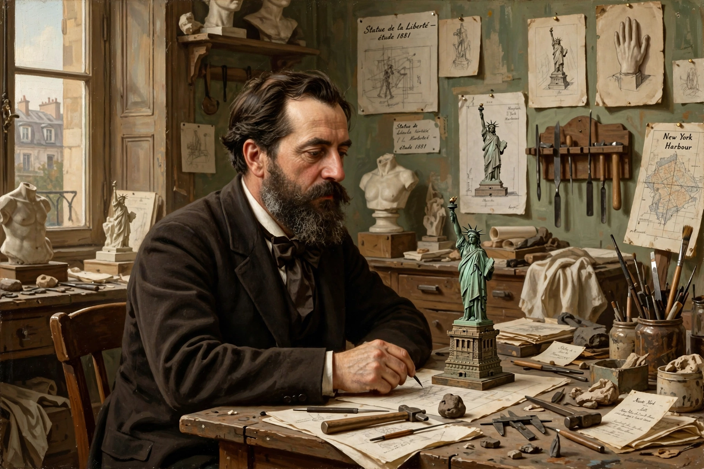

| Frédéric Auguste Bartholdi | |
|---|---|
 | |
| Born | 2 August 1834, Colmar, France |
| Died | 4 October 1904 (aged 70), Paris, France |
| Nationality | French |
| Known for | Statue of Liberty; Lion of Belfort |
Frédéric Auguste Bartholdi (2 August 1834 – 4 October 1904) was a French sculptor and painter. He is best known for designing Liberty Enlightening the World, commonly known as the Statue of Liberty, the statue in New York Harbor, a gift from France to the United States. Bartholdi also sculpted the Lion of Belfort, a monumental sculpture in Belfort, France, celebrating the city's resistance during the Franco-Prussian War.
Bartholdi was born in Colmar, Alsace, into a prosperous family. His father died when he was two, and he was raised by his mother. He studied architecture and painting in Paris, and travelled to Egypt in 1855–56, an experience that inspired his taste for colossal sculpture. He later proposed — unsuccessfully — a giant statue of a female figure at the northern entrance of the Suez Canal, a concept that anticipated the Statue of Liberty.
The idea of a French gift to the United States for the 1876 centennial was promoted by Édouard René de Laboulaye. Bartholdi designed the figure of a robed woman wearing a radiant crown and holding a torch, with a broken chain at her feet. The copper skin was built in Paris over an iron framework engineered by Gustave Eiffel, then disassembled and shipped to New York in 1885. The statue was dedicated on 28 October 1886. Bartholdi's mother is traditionally said to have been the model for the face, though this is debated.
His other works include the Bartholdi Fountain in Washington, D.C., statues of Lafayette and Washington in Paris and New York, the Bartholdi Fountain in Lyon, and numerous monuments in Colmar and elsewhere in France. The Bartholdi Museum in his birthplace in Colmar preserves his models and personal effects. He died of tuberculosis in Paris in 1904.